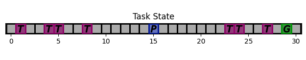
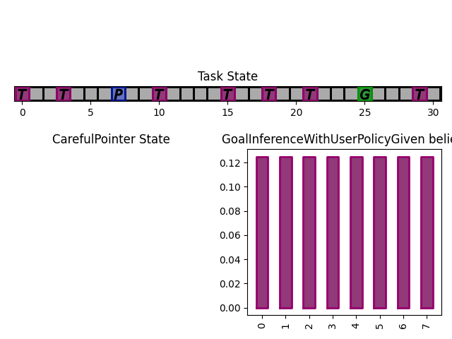
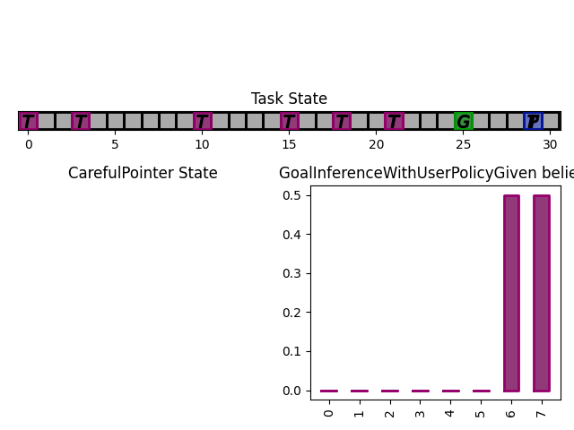
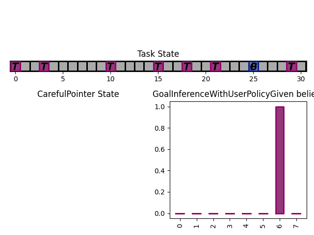
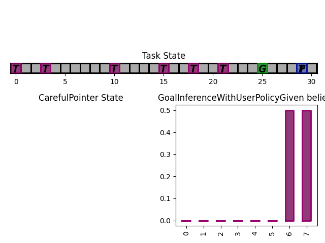
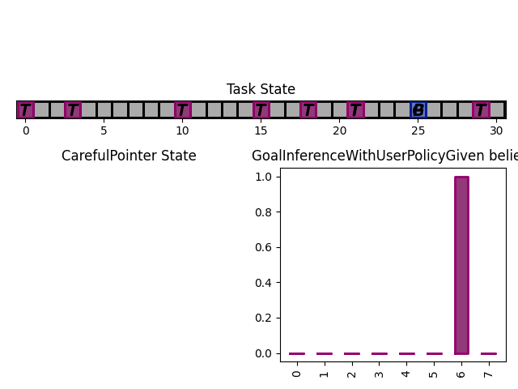

Warning
Code below has to be updated
More Complex Example
We are going to build a fully working bundle, with a task, a user model, and an assistant. The task that the user is trying to accomplish is to select a particular target, called the user’s goal, by positioning a cursor on top of it. The assistant can help the user by positioning the cursor anywhere. For now we keep the task very simple and consider a 1D gridworld:
{kind=link}
The user goal is the green ‘G’, the current cursor position is the blue ‘P’ and the other targets are the purple ‘T’s. The cursor can go anywhere within this space.
Task
We start off by subclassing InteractionTask. In the __init__ method, we define the static information such as the size of the gridworld in which the cursor moves, as well as the number of targets in that gridworld.
We also add two components to the task state: ‘position’ and ‘targets’, which respectively hold the information about cursor and target positions.
from coopihc import InteractionTask, StateElement, autospace
import numpy
class SimplePointingTask(InteractionTask):
def __init__(self, gridsize=31, number_of_targets=10, mode="gain"):
super().__init__()
self.gridsize = gridsize
self.number_of_targets = number_of_targets
self.mode = mode
self.dim = 1
self.state["position"] = StateElement(
[0 for i in range(self.dim)],
autospace(numpy.array([i for i in range(gridsize)])),
out_of_bounds_mode="clip",
)
self.state["targets"] = StateElement(
numpy.array([j for j in range(number_of_targets)]),
autospace(
flatten(
[
numpy.array([i for i in range(gridsize)])
for j in range(number_of_targets)
]
)
),
)
We then define a reset method, that randomizes the grid (useful when we want to repeat experiments)
def reset(self, dic=None):
targets = sorted(
numpy.random.choice(
list(range(self.gridsize)), size=self.number_of_targets, replace=False
)
)
# Define starting position not on top of any target
copy = list(range(len(self.grid)))
for i in targets:
copy.remove(i)
position = int(numpy.random.choice(copy))
self.state["position"][:] = position
self.state["targets"][:] = targets
Finally, we define two methods that describe how the state of the task transitions when receiving user and assistant actions.
def on_user_action(self, *args, **kwargs):
"""Check if the user signals that the cursor is on the goal.
"""
# User signals with 0 if the cursor is on the goal
is_done = False
if self.user_action == 0:
is_done = True
return self.state, -1, is_done
def on_assistant_action(self, *args, **kwargs):
is_done = False
# Stopping condition if too many turns
if int(self.round_number) >= 30:
return self.state, 0, True, {}
self.state["position"][:] = self.assistant_action
return self.state, 0, False
You can now check that everything works as intended, by bundling the task without any other agent for now. You can play a round of interaction by using arbitrary action values, e.g. 1 for the user and 18 for the assistant.
from coopihc.bundle.Bundle import Bundle
task = SimplePointingTask(gridsize=31, number_of_targets=8)
bundle = Bundle(task=task)
game_state = bundle.reset()
print(game_state)
# >>> print(game_state)
# ---------------- ----------- ------------------------- ------------------------------------------
# game_info turn_index 0 Discr(4)
# round_index 0 Discr(2)
# task_state position 7 Discr(31)
# targets [ 2 3 8 11 17 20 22 23] MultiDiscr[31, 31, 31, 31, 31, 31, 31, 31]
# user_action action 1 Discr(2)
# assistant_action action 1 Discr(2)
# ---------------- ----------- ------------------------- ------------------------------------------
bundle.step(user_action=1, assistant_action=18)
print(bundle.game_state)
# ---------------- ----------- ------------------------- ------------------------------------------
# game_info turn_index 0 Discr(4)
# round_index 1 Discr(2)
# task_state position 18 Discr(31)
# targets [ 2 3 8 11 17 20 22 23] MultiDiscr[31, 31, 31, 31, 31, 31, 31, 31]
# user_action action 1 Discr(2)
# assistant_action action 18 Discr(2)
# ---------------- ----------- ------------------------- ------------------------------------------
The complete code for this task is available in the CoopIHC-zoo task pointing repository, where the task has two modes and a rendering method.
Synthetic User Model
To define the user model (called CarefulPointer), we have to describe the 4 components of a CoopIHC agent: the state, the observation and inference engines, and the policy.
class CarefulPointer(BaseAgent):
def __init__(self, *args, error_rate=0.05, **kwargs):
self._targets = None
# -------------------------- User Policy --------------------------
# Indicates left (-1), right (1), or select (0)
action_state = State()
action_state["action"] = StateElement(
0, autospace(numpy.array([-1, 0, 1])), out_of_bounds_mode="warning"
)
# This part uses the ExplicitLikelihoodDiscretePolicy. It works by selecting actions according to various probabilities defined by the compute_likelihood function, which maps actions and observations to a probability. For example, if the user observes that the cursor is to the right of the target (goal > position), then -1 is mapped to 1-epsilon, and +1 mapped to epsilon. As a result, the user model will select action -1 with probability 1-epsilon.
ELLD_dic = {"compute_likelihood_args": {"error_rate": error_rate}}
ELLD_dic.update(kwargs.get("policy_kwargs", {}))
agent_policy = ELLDiscretePolicy(
action_state=action_state,
**ELLD_dic,
)
def compute_likelihood(self, action, observation, *args, **kwargs):
error_rate = kwargs.get("error_rate", 0)
# convert actions and observations
goal = observation["user_state"]["goal"]
position = observation["task_state"]["position"]
# Write down all possible cases (5)
# (1) Goal to the right, positive action
if goal > position and action > 0:
return 1 - error_rate
# (2) Goal to the right, negative action
elif goal > position and action < 0:
return error_rate
# (3) Goal to the left, positive action
if goal < position and action > 0:
return error_rate
# (4) Goal to the left, negative action
elif goal < position and action < 0:
return 1 - error_rate
elif goal == position and action == 0:
return 1
elif goal == position and action != 0:
return 0
elif goal != position and action == 0:
return 0
else:
raise RuntimeError(
"warning, unable to compute likelihood. You may have not covered all cases in the likelihood definition"
)
# Attach likelihood function to the policy
agent_policy.attach_likelihood_function(compute_likelihood)
# ------------------ User Observation Engine ---------------------
# Here we simply call the base user engine, see the documentation on observation engines.
observation_engine = RuleObservationEngine(
deterministic_specification=base_user_engine_specification,
)
# ----------------- User Inference Engine and internal states -----
# The user has a goal state, which is changed on each reset, so we might as well define the goal state there. The goal state is static throughout the game (the user will not change target goals in between resets), so there is no need for an inference engine as well.
# ---------- Calling BaseAgent class -----------
# Always finish by calling BaseAgent's init to correctly initialize all components.
super().__init__(
"user",
*args,
agent_policy=agent_policy,
agent_observation_engine=observation_engine,
**kwargs,
)
# property to make code more readable
@property
def targets(self):
return self.bundle.task.state["targets"]
def reset(self, dic=None):
# Select a random target as the goal.
index = numpy.random.randint(0, self.targets.size)
self.state["goal"] = StateElement(
self.targets[index],
self.targets.spaces[index],
out_of_bounds_mode="warning",
)
Notice that the code re-uses a lot of existing classes, which is in the spirit of CoopIHC. You can find more information about these in their respective documentation RuleObservationEngine and ExplicitLikelihoodDiscretePolicy.
Assistant
We are going to couple this operator with an intelligent assistant which leverages Bayesian Information Gain (BIG) [Liu2017]. This assistant follows two mechanisms:
It holds a belief vector, that assigns each target with a probability (namely the probability that that particular target is the user goal). This belief is maintained by a particular inference engine called GoalInferenceWithUserPolicyGiven, which as the name suggests, is capable of updating the beliefs associated with each target by leveraging a user model.
It maintains a policy, that at each step, puts the cursor in a position that is going to be maximally informative for the assistant. This policy is implemented as a BIGDiscretePolicy.
class BIGGain(BaseAgent):
def __init__(self):
super().__init__(
"assistant", agent_inference_engine=GoalInferenceWithUserPolicyGiven()
)
def finit(self):
action_state = self.bundle.game_state["assistant_action"]
action_state["action"] = StateElement(
0,
autospace([i for i in range(self.bundle.task.gridsize)]),
out_of_bounds_mode="error",
)
# Feed the model of the user policy to the policy and the inference engine.
user_policy_model = copy.deepcopy(self.bundle.user.policy)
agent_policy = BIGDiscretePolicy(action_state, user_policy_model)
self._attach_policy(agent_policy)
self.inference_engine._attach_policy(user_policy_model)
# Initialize uniformly distributed beliefs
self.state["beliefs"] = StateElement(
numpy.array(
[
1 / self.bundle.task.number_of_targets
for i in range(self.bundle.task.number_of_targets)
]
).reshape(-1, 1),
autospace(
numpy.zeros((1, self.bundle.task.number_of_targets)),
numpy.ones((1, self.bundle.task.number_of_targets)),
),
out_of_bounds_mode="error",
)
def reset(self, dic=None):
# Uniformly distributed beliefs
self.state["beliefs"][:] = numpy.array(
[
1 / self.bundle.task.number_of_targets
for i in range(self.bundle.task.number_of_targets)
]
).reshape(1, -1)
# Below, we provide the set of potential goals (set_theta) and a model of the transition function to the inference engine and the policy of the assistant (those are specific to these particular components and not the assistants or policies and inference engines in general)
set_theta = [
{
("user_state", "goal"): StateElement(
t,
discrete_space(numpy.array(list(range(self.bundle.task.gridsize)))),
)
}
for t in self.bundle.task.state["targets"]
]
self.inference_engine.attach_set_theta(set_theta)
self.policy.attach_set_theta(set_theta)
def transition_function(assistant_action, observation):
"""What future observation will the user see due to assistant action"""
# always do this
observation["assistant_action"]["action"] = assistant_action
# specific to BIGpointer
observation["task_state"]["position"] = assistant_action
return observation
self.policy.attach_transition_function(transition_function)
You can find this assistant in the assistant pointing repository.
Bundle
Now that all components are ready, we can bundle them together to evaluate our first combination of user model and assistant. These components exist in CoopIHC-zoo and we import them directly from there. We then evaluate the performance of this pair, by playing a few rounds until the game ends and accumulating samples and rewards.
from coopihczoo.pointing.envs import SimplePointingTask
from coopihczoo.pointing.users import CarefulPointer
from coopihczoo.pointing.assistants import BIGGain
from coopihc.bundle.Bundle import Bundle
import matplotlib.pyplot as plt
task = SimplePointingTask(gridsize=31, number_of_targets=8, mode="position")
binary_user = CarefulPointer(error_rate=0.05)
BIGpointer = BIGGain()
bundle = Bundle(task=task, user=binary_user, assistant=BIGpointer)
game_state = bundle.reset()
bundle.render("plotext")
plt.tight_layout()
while True:
game_state, rewards, is_done = bundle.step(user_action=None, assistant_action=None)
# Do something with rewards or the game state
bundle.render("plotext")
if is_done:
bundle.close()
break
This assistant has very good performance. This is expected since we have given the assistant the true user model, and since the user model in itself is extremely simple and does not account for various ‘penalties’ a real user would incur from the cursor jumping around the gridworld.
The figures below show a run, which finished in 3 steps with the task state as well as the assistant beliefs rendered.
{kind=link}
 



{kind=link}
{kind=link}
What next
The example that we have just seen is what you would expect from an early prototype. Several extensions and enhancements could follow:
You could use a more complex user model to pair with the assistant. For example, a visual search model could determine how the cursor is located after a ‘jump’, penalizing frequent and high amplitude jumps. A motor control model could determine how the cursor moves (e.g. fast initially, and much slower towards the end. To see such examples, head over to Modularity.
Alternatively, you could learn the user behavior for a given assistant policy, e.g. via Deep Reinforcement Learning. See Using Reinforcement Learning for an example.
You could tune the BIGGain assistant to account for the extra cost associated with jumps in the cursor.
You could look at the effect of model mismatch between the model handled by the BIGGain assistant and the synthetic user model
You could pair your assistant with a real user to evaluate its short term performance. See Interfacing CoopIHC with a real user for an example.
You could jointly train the user model and the assistant to simulate co-adaptation between a user and a tool.
- Liu2017
Liu, Wanyu, et al. “Bignav: Bayesian information gain for guiding multiscale navigation.” Proceedings of the 2017 CHI Conference on Human Factors in Computing Systems. 2017.